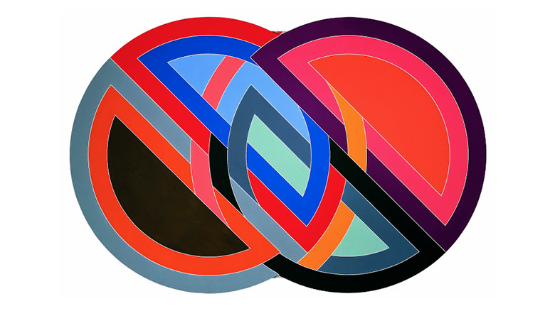

minimal

Frank Stella
https://www.sfmoma.org/artist/Frank_Stella-どんな人
アメリカの画家、彫刻家であり、戦後アメリカの抽象画家を代表する作家です。半円の形を用いたミニマルなアートを多く作ってきました。
-解説
通常の絵画とは異なり、色面にムラを一切残さずフラットに表現する「ハード・エッジ」とよばれる絵画の一作品です。 全て半円形によって色面分割されており、シンプルな構成で作られています。
-好きなところ
半円形同士の重なりが複雑に入り組んでおり、平面でありながら、立体的な遠近感を与えるような部分が好きです。